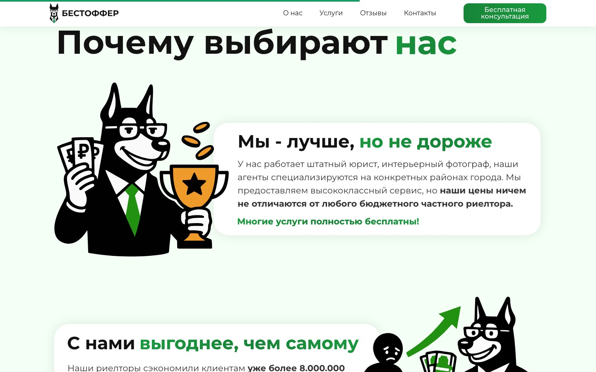
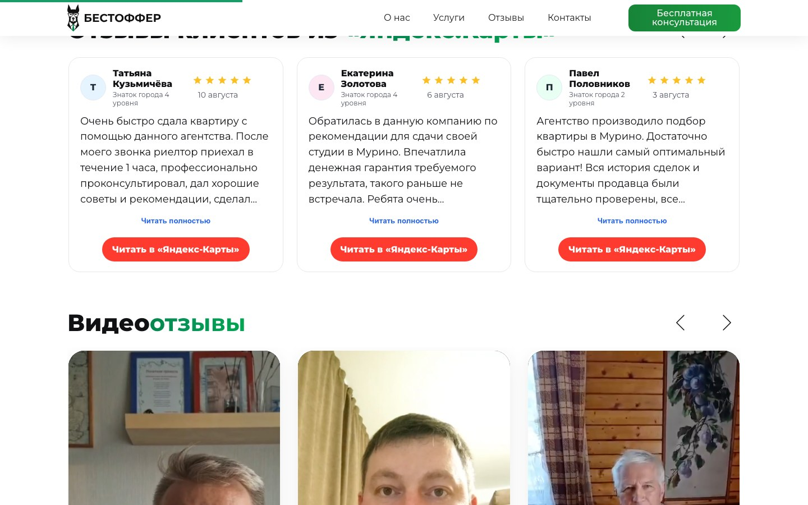
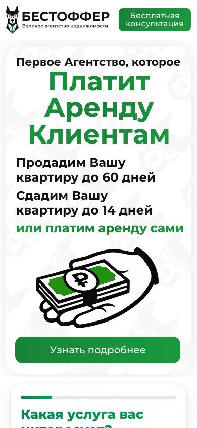
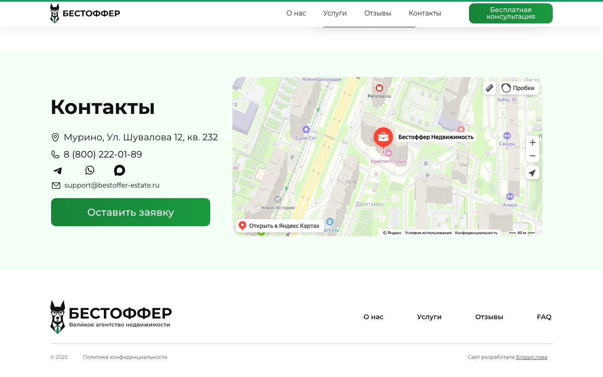

Задать узнаваемое направление
Подобрать шрифты, цвета, характер изображений и правила оформления блоков.
Web design · Tilda · Фриланс · 2025
Коммерческий лендинг под ключ: от визуальной концепции в Figma до адаптивной сборки, форм и запуска на собственном домене.

Обзор
Заказчик пришёл с готовой структурой, текстами и логотипом. Я собрала из этих материалов цельный визуальный образ, перенесла макеты на Tilda и подготовила сайт к реальной работе.
Задача
Структура и содержание блоков были заданы заранее. Нужно было найти характер бренда, оформить все разделы и довести проект до рабочего сайта.
Подобрать шрифты, цвета, характер изображений и правила оформления блоков.
Собрать утверждённые макеты в Zero Block и добавить нужное поведение элементов.
Настроить адаптив, формы, домен и защищённое соединение.
Визуальное направление
В основе — контрастная типографика, много воздуха, светло‑зелёные поверхности и фирменный персонаж. Иллюстрации помогают объяснять преимущества проще и делают агентство более человечным.

Реализация
Я полностью оформила блоки в Figma и показала заказчику будущий вид сайта. К сборке перешла после согласования концепции.
Собрала блоки вручную, сохранив композицию, типографику и визуальную иерархию утверждённого дизайна.
Для отдельных функций и анимаций использовала кодовые блоки, когда возможностей стандартной сборки было недостаточно.

Адаптив
После основной сборки я отдельно настроила композицию для мобильных устройств: перестроила блоки, проверила размеры текста, изображений и интерактивных элементов.

Результат
В финале заказчик получил работающий адаптивный сайт, настроенный и опубликованный на собственном домене.
Все основные блоки адаптированы под разные размеры экрана.
Обращения с сайта поступают заказчику и не теряются.
Сайт опубликован по рабочему адресу с защищённым соединением.

Я полностью спроектировала визуал, собрала сайт на Tilda, настроила адаптив и техническую часть, а затем передала готовый проект заказчику.
Открыть сайт ↗